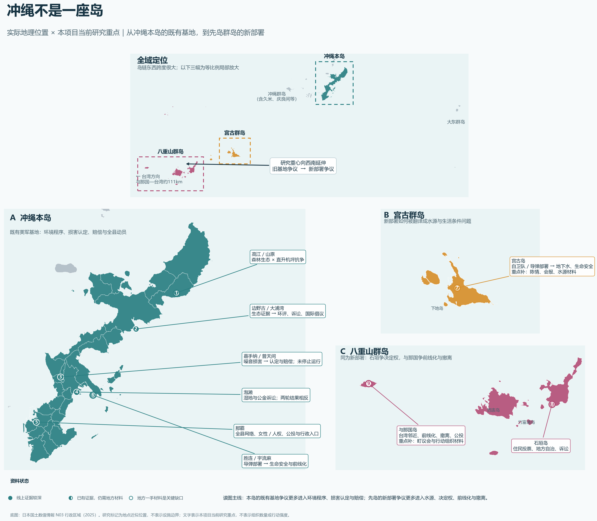

一期探索系统
地方损害如何被组织翻译成环保、生活安全、自治、人权、法律与国际倡议，并进入不同制度场域？
先从地域理解问题，再沿组织或制度路径下钻；每条可见事实都能打开证据。

本系统展示公开资料可核查样本，不代表冲绳民间组织总体；时间覆盖情况见「历史演变」。
本屏设计注记（检查点 A）
禁止出现：统计卡片堆砌（122/295/241 等数字）、网络图、地图作为唯一入口、HR/MT 内部编号。
请判断：是否同意地图主导但不垄断入口？地图标题用“冲绳不是一座岛”还是更中性的“冲绳区域研究总览”？
组织生态 回答 Q1/Q2：有哪些组织、如何分类、谁跨议题连接
按功能层分组的组织列表（默认视图，非网络图）
〔功能层名〕—— 议题相关不等于政治立场；服务型组织按观察到的功能编码。
| 组织 | 功能层 | 主要地点 | 状态 |
|---|---|---|---|
| 〔组织名 A · 示例占位〕 | 〔本地公民行动〕 | 〔边野古〕 | 已人工复核 |
| 〔组织名 B · 示例占位〕 | 〔环保与环境程序〕 | 〔那霸／全县〕 | 来源支持·有界 |
| 〔组织名 C · 示例占位〕 | 〔基地社区服务〕 | 〔宜野湾〕 | 来源支持·有界 |
| 〔候选扩展名称 · 示例占位〕 | 〔待分类〕 | — | 候选·未复核 |
外来 actor 层（国际倡议／本土声援／服务／公共外交）单列分组显示，不与本地组织混排计数；event-only 名称不出现在本列表。
议题与桥接视图（Q2 入口）
本屏设计注记
禁止出现：默认网络图；把 event-only 名称或制度节点计入组织数；"影响力排名"。
演示层边界：候选扩展名称仅研究层可见（切开关验证）。
〔组织正式名称 · 示例占位〕 已人工复核
别名：〔日文名〕〔英文名〕〔旧称（标注 alias 类型）〕 | 功能层：〔本地公民行动〕 | 来源属性：〔冲绳本地〕 | 法律身份：〔任意団体／未确认〕
议题 人审边在前
〔议题 1〕已人工复核证据
〔议题 2〕已人工复核证据
〔议题 3〕候选·未复核证据
研究层：候选议题边不构成正式结论。
地点关系 语义分列
总部：〔地点〕证据
活动现场：〔地点〕来源支持·有界证据
倡议对象：〔地点〕候选·未复核
本屏设计注记
禁止出现：中心性/度数指标、"联盟"字样、无官方记录的资助表述、票数或政策因果。
地点与地方化 回答 Q3：同一基地／部署问题为何在不同地方形成不同表达
V01 区域研究导航图
地图标记为地点近似位置，不表示设施边界；标记颜色＝材料状态三态（线上证据较深／已有证据仍需地方材料／地方一手材料是关键缺口）。
本屏设计注记
禁止出现：把材料密度画成组织活动强度；与那国被强行环保化的框架文案。
〔地点名〕 线上证据较深
地方问题主框架（R4 正式安全层）：〔海洋生态／儒艮保护如何把建设争议接入环境程序、法律与国际倡议〕证据
V02 地点转译剖面
V03 严格地点—议题证据矩阵 默认＝双边人审同源层
〔议题〕×〔事件/文书〕已人工复核证据
〔议题〕×〔事件/文书〕已人工复核证据
〔议题〕×〔事件/文书〕候选·未复核
只显示同一来源／同一事件中共同出现的地点—议题事实；不使用任何笛卡尔投影密度。
该地的制度路径（episode）
| episode | 场域 | 产出层级 | 状态 |
|---|---|---|---|
| 〔episode 名 · 示例占位〕 | 〔法院／EIA〕 | 〔中间产出／有限结果〕 | 已人工复核 |
本屏设计注记
禁止出现：宽投影地点×议题密度；"组织密度高／低"表述。与那国页固定使用 前线化/自治/公投/台湾邻近/生命安全 框架。
两地同字段对照（不是两段散文并排）
| 字段 | 〔边野古／大浦湾〕 | 〔与那国〕 |
|---|---|---|
| 物质争议对象 | 〔新建工程·海洋生态〕证据 | 〔新部署·前线化〕证据 |
| 地方问题框架 | 〔生态／儒艮／环评〕 | 〔自治·公投·台湾邻近·生命安全〕 |
| 环保框架 | 〔主框架〕 | 限定语料中未证实（≠当地无环境关切） |
| 主要制度场域 | 〔EIA·诉讼·国际机构〕 | 〔公投·议会·行政〕 |
| 可观察产出 | 〔程序审查·记录〕 | 〔签名·条例议程〕 |
| 底层政策改变 | 无记录 | 无记录 |
| 材料状态 | 线上证据较深 | 地方一手材料是关键缺口 |
空位与"未证实"显式显示；两地差异部分源于来源制度差异，字段"材料状态"提示这一点。
本屏设计注记
禁止出现：自由文本两栏并排；跨地点"成功率"比较。
请判断：这一比较是否真正减少阅读？默认对照组合选哪两个？
行动与制度路径 诉求如何通过联署、诉讼、公投、行政、国际倡议进入制度
已核 episode（演示层）
| episode | 地点 | 场域序列 | 产出层级 | 状态 |
|---|---|---|---|---|
| 〔法律程序案 · 示例〕 | 〔边野古〕 | 〔现场→法院→国际〕 | 〔中间产出〕 | 已人工复核 |
| 〔噪音诉讼案 · 示例〕 | 〔嘉手纳/普天间〕 | 〔法院〕 | 〔有限结果（赔偿）〕 | 已人工复核 |
| 〔住民投票案 · 示例〕 | 〔石垣〕 | 〔签名→议会→司法〕 | 〔中间产出〕 | 已人工复核 |
| 〔事件候选 · 示例〕 | — | — | — | 候选·未复核 |
换一种看法 辅助图按阅读任务出现，不按 R 模块分栏
本屏设计注记
禁止出现：选举接口内容（19 条全部待审，仅研究层）；跨案成功率。
请判断：三种筛选是否符合你实际比较案例的方式？辅助图是否继续折叠？
〔episode 名 · 示例占位〕 已人工复核
地点：〔地点〕 | 时间：〔事件日期区间（事件日，非来源发布日）〕
链条顺序＝时间／程序顺序，不表示因果；进入制度场域不等于诉求成功。
参与者与角色（registry actor 与程序节点分列）
| 参与者 | 角色 | 类型 |
|---|---|---|
| 〔组织名〕 | 〔原告〕 | 登记组织 证据 |
| 〔律师团名〕 | 〔代理〕 | 程序性集合（非登记组织） |
| 〔支援名称〕 | 〔非当事支援〕 | event-only 名称 |
程序时间线
本屏设计注记
禁止出现：成功率、"导致政策改变"、把请求写成机构回应。
四个时期：锚点、覆盖与缺口 一期口径＝背景锚点层，不承诺完整谱系
1972–1997
已核锚点：〔极少〕
当地材料缺口
NR-04 候选锚点 候选
1998–2012
已核锚点：〔法人化分界／关键诉讼〕
NR-05 候选锚点 候选
2013–2019
已核锚点：〔县民投票／诉讼轮次〕
2020–现在
已核锚点：〔国际倡议／先岛安全化〕
覆盖条显示的是「来源年份分布」，不是组织活动强度；早期空白是资料可见性问题，本系统把它作为研究信息显示，而不是画一条虚假的连续时间线。
锚点详情（点击时期内锚点后展开）
〔锚点：某组织 formed／renamed（示例占位）〕 历史证据类别：后来组织回顾 证据
当时名称：〔〕 → 现名：〔〕 | 同名≠同一实体：连续性判断须项目负责人决定，未决定时显示为「未确认」。
本屏设计注记
禁止出现：未经负责人决定的连续性连线；用当前网络反推长期增长；"完整演变"表述。
请判断：历史演变作为一级入口（而非藏进方法页）是否接受？
样本能看见什么（覆盖阅读说明）
阅读全站前的三句话：样本不是总体；来源发布年≠事件年；归档失败≠证据不存在。
证据等级与状态徽章说明
已人工复核 来源支持·有界 候选·未复核 分析种子 需当地材料
E0–E4 证据等级白话说明；演示层／研究层开关的含义。
数据与下载 / 版本记录
本屏设计注记
禁止出现：内部 HR 队列、任务编号、来源归档目录直接暴露。